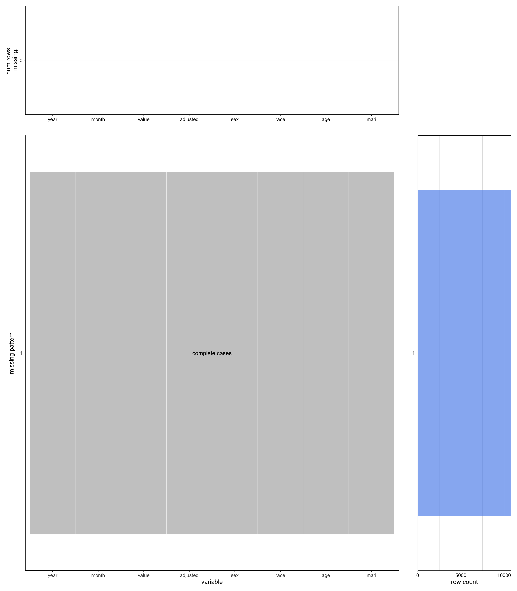
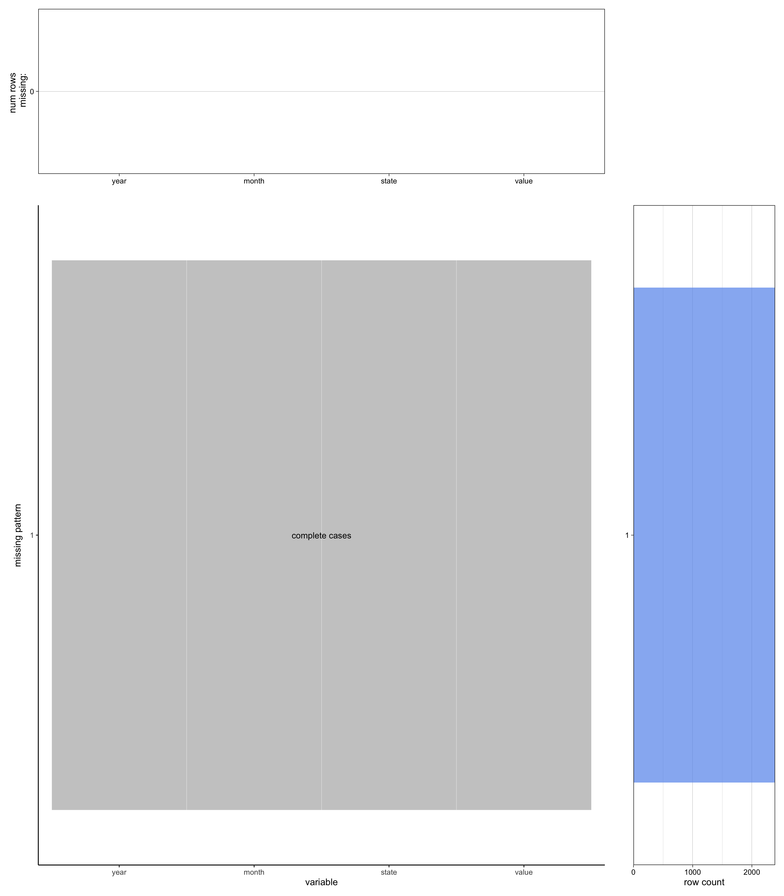
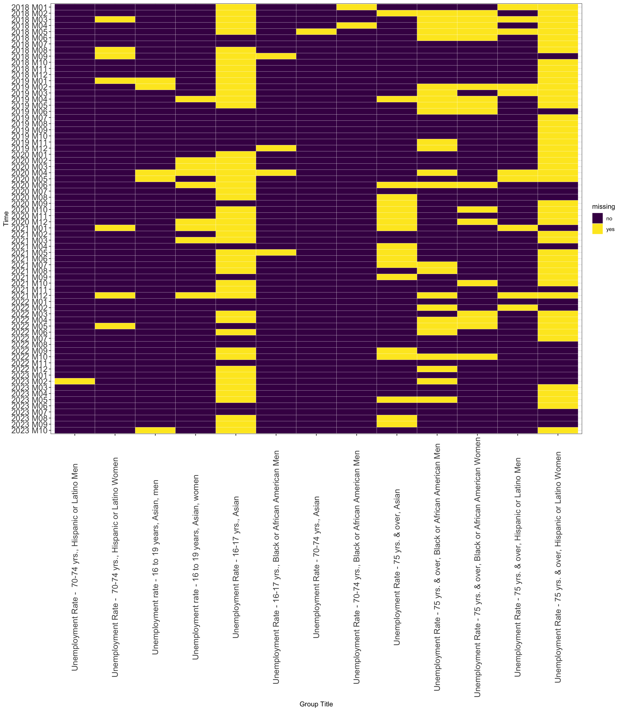
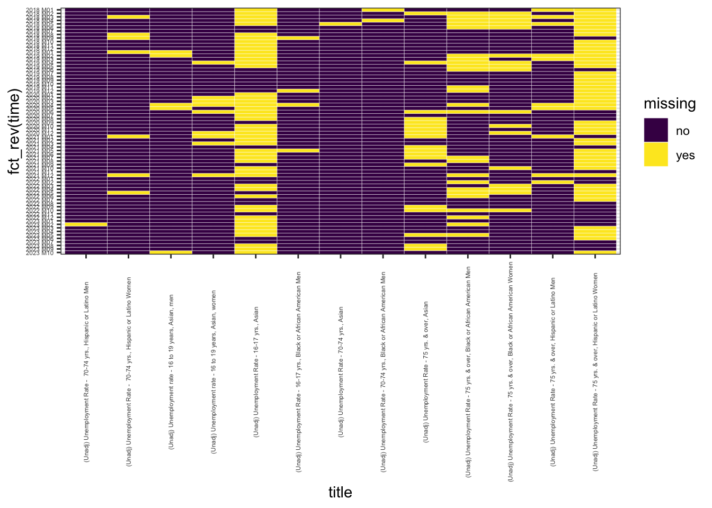

Code
knitr::opts_chunk$set(warning = FALSE, message = FALSE)
knitr::opts_chunk$set(fig.width=14, fig.height=16)Data Source
All of the national unemployment rate data will be from US Bureau of Labor Statistics. The data is collected through the Current Population Survey (CPS), which is a monthly survey of households conducted by the Bureau of Census for the Bureau of Labor Statistics. There are many CPS tables on the website - we want our data to be similar to A-10. Unemployment rates by age, sex, and marital status, seasonally adjusted, which allows us to investigate potential influences of ethnicity, age, sex, and even marital status on unemployment rate.
Data Import
As BLS doesn’t provide CSV files of such organized data like the A-10 table, we access the raw data by The BLS Public Data Application Programming Interface (API). Specifically, we use API to extract national unemployment rates of different demographic groups. When extracting data, we refer to LN series id list – Labor force statistics including the national unemployment rate (we save it as ln.series.txt in the data folder for further use) under CPS Databases and put the series_id of the information we need into the api query (ie. we extract some of the data listed here by API). We then convert all the data from Json to CSV files, preprocess the data, and combine them into single data set.
The data set is in the following format:
Time range: Jan 2020 - Nov 2023
Frequency of update: monthly - latest update is for Nov 2023
Dimensions: year, month, value, adjusted, sex, race, age, mari
year: the year of the unemployment rate survey
month: the month of the unemployment rate survey
value: unemployment rate
adjusted: whether the unemployment rate is seasonally adjusted
sex: the sex surveyed for the unemployment rate (can take value “Both”, “Men”, or “Women”)
race: the race surveyed for the unemployment rate (can take value “All”, “Asian”, “Black”, “Latino”, or “White”)
age: the age surveyed for the unemployment rate (can take value “All”, “16-19”, “20-24”, “25-34”, “35-44”, “45-54”, “55-64”, or “65-” for unadjusted data; “16-17”, “16-19”, “16-24”, “18-19”, “20-”, “20-24”, “25-”, “25-34”, “25-54”, “35-44”, “45-54”, or “55-” for seasonally adjusted data)
mari: the marital status surveyed for the unemployment rate (can take value “All”, “Never Married”, “Married, spouse present”, or “Widdowed, divorced, or seperated” for unadjusted data; “All” or “Married, spouse present” for seasonally adjusted data)
Note that BLS does not collect unemployment rate for all combinations of all demographic features! (For example, unadjusted unemployment rate data for 20-to-24-year-old asian men, whose marital status is “Widdowed, divorced, or seperated” doesn’t exist.)
knitr::opts_chunk$set(warning = FALSE, message = FALSE)
knitr::opts_chunk$set(fig.width=14, fig.height=16)library(readr)
library(dplyr)
library(stringr)
all_df = read.table("data/ln.series.txt", header = TRUE, sep = "\t", stringsAsFactors = FALSE)
all_df = all_df %>%
filter(str_detect(series_title, "Unemployment"))%>%
filter(!str_detect(series_title, "Level"))%>%
filter(
absn_code == 0,
activity_code == 0,
cert_code == 0,
class_code == 0,
duration_code == 0,
education_code == 0,
entr_code == 0,
expr_code == 0,
hheader_code == 0,
hour_code == 0,
indy_code == 0,
jdes_code == 0,
look_code == 0,
mjhs_code == 0,
occupation_code == 0,
pcts_code == 0,
rjnw_code == 0,
rnlf_code == 0,
rwns_code == 0,
seek_code == 0,
vets_code == 0,
wkst_code == 0,
born_code == 0,
chld_code == 0,
disa_code == 0,
orig_code %in%c(0,1)
) %>%
filter(str_detect(series_id, "LNU040")) %>%
mutate(race_code = if_else(orig_code == 1, 2, race_code)) %>%
filter(race_code %in% c(0,1,2,3,4)) %>%
filter(periodicity_code=="M")
all_df$series_id <- trimws(all_df$series_id)
n <- nrow(all_df)
size <- ceiling(n / 12)
groups <- rep(1:12, each = size)
groups <- groups[1:n]
split_dfs <- split(all_df, groups)
list1 <- split_dfs[1:4]
list2 <- split_dfs[5:12]
#install.packages("devtools")
#devtools::install_github("mikeasilva/blsAPI")
library(rjson)
library(blsAPI)
library(ggplot2)
data <- data.frame(
year = character(),
period = character(),
periodName = character(),
value = character(),
adjusted = logical(),
sex = character(),
race = character(),
age = character(),
marital = character(),
stringsAsFactors = FALSE
)
## Process results
apiDF <- function(data,series_title,sexs_code,race_code,ages_code,mari_code) {
sexs_value <- if (sexs_code == 1) {
"Men"
} else if (sexs_code == 2) {
"Women"
} else {
"Both"
}
race_value <- if (race_code == 1) {
"White"
} else if (race_code == 2) {
"Latino"
} else if (race_code == 3) {
"Black"
} else if (race_code == 4) {
"Asian"
} else {
"All"
}
ages_value <- if (ages_code == 7) {
"16-17"
} else if (ages_code == 8) {
"16-19"
} else if (ages_code == 10) {
"16-24"
} else if (ages_code == 13) {
"18-19"
} else if (ages_code == 15) {
"18-"
} else if (ages_code == 17) {
"20-"
} else if (ages_code == 20) {
"20-24"
} else if (ages_code == 22) {
"20-64"
} else if (ages_code == 28) {
"25-"
} else if (ages_code == 30) {
"25-29"
} else if (ages_code == 31) {
"25-34"
} else if (ages_code == 33) {
"25-54"
} else if (ages_code == 36) {
"30-34"
} else if (ages_code == 37) {
"35-39"
} else if (ages_code == 38) {
"35-44"
} else if (ages_code == 39) {
"40-44"
} else if (ages_code == 40) {
"45-"
} else if (ages_code == 41) {
"45-49"
} else if (ages_code == 42) {
"45-54"
} else if (ages_code == 44) {
"50-54"
} else if (ages_code == 45) {
"55-"
} else if (ages_code == 48) {
"55-59"
} else if (ages_code == 49) {
"55-64"
} else if (ages_code == 56) {
"60-61"
} else if (ages_code == 57) {
"60-64"
} else if (ages_code == 61) {
"62-64"
} else if (ages_code == 65) {
"65-"
} else if (ages_code == 66) {
"65-69"
} else if (ages_code == 72) {
"70-"
} else if (ages_code == 73) {
"70-74"
} else if (ages_code == 78) {
"75-"
} else {
"All"
}
mari_value <- if (mari_code == 1) {
"Never Married"
} else if (mari_code == 2) {
"Married, spouse present"
} else if (mari_code == 9) {
"Widdowed, divorced, or seperated"
} else {
"All"
}
adjusted <- if (str_detect(series_title, '(Unadj)')) {
FALSE
} else {
TRUE
}
df <- data %>%
select(-footnotes,-latest) %>%
mutate(adjusted=adjusted, title=series_title, sex=sexs_value, race=race_value, age=ages_value, mari=mari_value)
return(df)
}
library(jsonlite)
for (i in 1:4) {
current_df <- list1[[i]]
## Pull the data via the API
payload <- list(
'seriesid' = current_df$series_id,
'startyear' = 2020,
'endyear' = 2023,
'registrationKey'='9e0f46de2cb9444b808f4b26131459ce') #38573dc63f3d4016a425126b9e52903e
response <- blsAPI(payload, 2)
json <- jsonlite::fromJSON(response)
for (j in 1:nrow(current_df)) {
single_data <- apiDF(json$Results$series$data[[j]], series_title=current_df[j,]$series_title, sexs_code=current_df[j,]$sexs_code, race_code=current_df[j,]$race_code, ages_code=current_df[j,]$ages_code, mari_code =current_df[j,]$mari_code)
data<- rbind(data, single_data)
}
}
for (i in 1:8) {
current_df <- list2[[i]]
## Pull the data via the API
payload <- list(
'seriesid' = current_df$series_id,
'startyear' = 2020,
'endyear' = 2023,
'registrationKey'='38573dc63f3d4016a425126b9e52903e')
response <- blsAPI(payload, 2)
json <- jsonlite::fromJSON(response)
for (j in 1:nrow(current_df)) {
single_data <- apiDF(json$Results$series$data[[j]], series_title=current_df[j,]$series_title, sexs_code=current_df[j,]$sexs_code, race_code=current_df[j,]$race_code, ages_code=current_df[j,]$ages_code, mari_code =current_df[j,]$mari_code)
data<- rbind(data, single_data)
}
}
library(readr)
unadj_UR = data %>%
mutate(month = periodName) %>%
filter(age=="All"|age=="16-19"|age=="20-24"|age=="25-34"|age=="35-44"|age=="45-54"|age=="55-64"|age=="65-") %>%
select(year, month = periodName, value, adjusted, sex, race, age, mari)
library(readr)
library(dplyr)
library(stringr)
all_df = read.table("data/ln.series.txt", header = TRUE, sep = "\t", stringsAsFactors = FALSE)
all_df = all_df %>%
filter(str_detect(series_title, "Unemployment"))%>%
filter(!str_detect(series_title, "Level"))%>%
filter(
absn_code == 0,
activity_code == 0,
cert_code == 0,
class_code == 0,
duration_code == 0,
education_code == 0,
entr_code == 0,
expr_code == 0,
hheader_code == 0,
hour_code == 0,
indy_code == 0,
jdes_code == 0,
look_code == 0,
mjhs_code == 0,
occupation_code == 0,
pcts_code == 0,
rjnw_code == 0,
rnlf_code == 0,
rwns_code == 0,
seek_code == 0,
vets_code == 0,
wkst_code == 0,
born_code == 0,
chld_code == 0,
disa_code == 0,
orig_code %in%c(0,1)
) %>%
filter(str_detect(series_id, "LNS130|LNS140")) %>%
mutate(race_code = if_else(orig_code == 1, 2, race_code)) %>%
filter(race_code %in% c(0,1,2,3,4)) %>%
filter(periodicity_code=="M")
all_df$series_id <- trimws(all_df$series_id)
n <- nrow(all_df)
size <- ceiling(n / 12)
groups <- rep(1:12, each = size)
groups <- groups[1:n]
split_dfs <- split(all_df, groups)
list1 <- split_dfs[1:4]
list2 <- split_dfs[5:12]
#install.packages("devtools")
#devtools::install_github("mikeasilva/blsAPI")
library(rjson)
library(blsAPI)
library(ggplot2)
data <- data.frame(
year = character(),
period = character(),
periodName = character(),
value = character(),
adjusted = logical(),
sex = character(),
race = character(),
age = character(),
marital = character(),
stringsAsFactors = FALSE
)
library(jsonlite)
for (i in 1:4) {
current_df <- list1[[i]]
## Pull the data via the API
payload <- list(
'seriesid' = current_df$series_id,
'startyear' = 2020,
'endyear' = 2023,
'registrationKey'='9e0f46de2cb9444b808f4b26131459ce') #38573dc63f3d4016a425126b9e52903e
response <- blsAPI(payload, 2)
json <- jsonlite::fromJSON(response)
for (j in 1:nrow(current_df)) {
single_data <- apiDF(json$Results$series$data[[j]], series_title=current_df[j,]$series_title, sexs_code=current_df[j,]$sexs_code, race_code=current_df[j,]$race_code, ages_code=current_df[j,]$ages_code, mari_code =current_df[j,]$mari_code)
data<- rbind(data, single_data)
}
}
for (i in 1:8) {
current_df <- list2[[i]]
## Pull the data via the API
payload <- list(
'seriesid' = current_df$series_id,
'startyear' = 2020,
'endyear' = 2023,
'registrationKey'='38573dc63f3d4016a425126b9e52903e')
response <- blsAPI(payload, 2)
json <- jsonlite::fromJSON(response)
for (j in 1:nrow(current_df)) {
single_data <- apiDF(json$Results$series$data[[j]], series_title=current_df[j,]$series_title, sexs_code=current_df[j,]$sexs_code, race_code=current_df[j,]$race_code, ages_code=current_df[j,]$ages_code, mari_code =current_df[j,]$mari_code)
data<- rbind(data, single_data)
}
}
library(readr)
seas_UR = data %>%
mutate(month = periodName) %>%
select(year, month, value, adjusted, sex, race, age, mari)
UR = bind_rows(unadj_UR, seas_UR)
write_csv(UR, "data/UR.csv")
head(UR) year month value adjusted sex race age mari
1 2023 November 3.5 FALSE Both All All All
2 2023 October 3.6 FALSE Both All All All
3 2023 September 3.6 FALSE Both All All All
4 2023 August 3.9 FALSE Both All All All
5 2023 July 3.8 FALSE Both All All All
6 2023 June 3.8 FALSE Both All All AllData Source
All of the state unemployment rate data will be from US Bureau of Labor Statistics. The data is collected through the The Local Area Unemployment Statistics (LAUS) program, which produces monthly unemployment data for states.
Data Import
As BLS doesn’t provide CSV files of such data, we access the raw data by The BLS Public Data Application Programming Interface (API). Specifically, we use API to extract unemployment rates of different states. By referring to series_id of the data listed here and the states code (we save it as sm.state.txt in the data folder for further use) under Series ID Formats, we put the series_id of the information we need into the api query. We then convert all the data from Json to CSV files, preprocess the data, and combine them into single data set.
The data set is in the following format:
Time range: Jan 2020 - Oct 2023
Frequency of update: monthly - latest update is for Oct 2023
Dimensions: year, month, state, value
year: the year of the unemployment rate survey
month: the month of the unemployment rate survey
state: the state surveyed for the unemployment rate (including 50 states, Puerto Rico, and District of Columbia)
value: not seasonally adjusted unemployment rate
library(readr)
library(dplyr)
library(stringr)
all_df = read.table("data/sm.state.txt", header = TRUE, sep = "\t", stringsAsFactors = FALSE)
all_df = all_df[-1, ]
all_df = head(all_df, -2)
all_df = all_df %>%
mutate(state_code = as.character(state_code)) %>%
mutate(state_code = str_pad(state_code, width = 2, pad = "0"))%>%
mutate(series_id = paste('LAUST', state_code,'0000000000003', sep=''))
n <- nrow(all_df)
size <- ceiling(n / 2)
groups <- rep(1:2, each = size)
groups <- groups[1:n]
split_dfs <- split(all_df, groups)
list1 <- split_dfs[1]
list2 <- split_dfs[2]
#install.packages("devtools")
#devtools::install_github("mikeasilva/blsAPI")
library(rjson)
library(blsAPI)
library(ggplot2)
data <- data.frame(
year = character(),
period = character(),
periodName = character(),
state = character(),
value = character(),
stringsAsFactors = FALSE
)
library(jsonlite)
current_df <- list1[[1]]
## Pull the data via the API
payload <- list(
'seriesid' = current_df$series_id,
'startyear' = 2020,
'endyear' = 2023,
'registrationKey'='38573dc63f3d4016a425126b9e52903e') #9e0f46de2cb9444b808f4b26131459ce
response <- blsAPI(payload, 2)
json <- jsonlite::fromJSON(response)
for (j in 1:nrow(current_df)) {
single_data <- data.frame(
year = json$Results$series$data[[j]]$year,
period = json$Results$series$data[[j]]$period,
periodName = json$Results$series$data[[j]]$periodName,
state = current_df[j,]$state_name,
value = json$Results$series$data[[j]]$value,
stringsAsFactors = FALSE
)
data<- rbind(data, single_data)
}
current_df <- list2[[1]]
## Pull the data via the API
payload <- list(
'seriesid' = current_df$series_id,
'startyear' = 2020,
'endyear' = 2023,
'registrationKey'='38573dc63f3d4016a425126b9e52903e') #9e0f46de2cb9444b808f4b26131459ce
response <- blsAPI(payload, 2)
json <- jsonlite::fromJSON(response)
for (j in 1:nrow(current_df)) {
single_data <- data.frame(
year = json$Results$series$data[[j]]$year,
period = json$Results$series$data[[j]]$period,
periodName = json$Results$series$data[[j]]$periodName,
state = current_df[j,]$state_name,
value = json$Results$series$data[[j]]$value,
stringsAsFactors = FALSE
)
data<- rbind(data, single_data)
}
library(readr)
state_UR = data %>%
mutate(month = periodName) %>%
select(year, month = periodName, state, value)
write_csv(state_UR, "data/state_UR.csv")
head(state_UR) year month state value
1 2023 October Alabama 2.4
2 2023 September Alabama 2.4
3 2023 August Alabama 2.4
4 2023 July Alabama 2.3
5 2023 June Alabama 2.7
6 2023 May Alabama 2.1Data Source
All of the monthly US National COVID-19 death rate data will be from Centers for Disease Control and Prevention COVID Data Tracker. The data is collected by CDC, who provides COVID-19 death rates per 100,000 population stratified by age group, race/ethnicity, sex, and region every month.
Data Import
We can directly download the CSV file here.
The data set is in the following format:
Time range: Jan 2020 - Oct 2023
Frequency of update: monthly - latest update is for Oct 2023
Dimensions: data_as_of, jurisdiction_residence, data_period_start, data_period_end, group, subgroup1, COVID_deaths, crude_rate, conf_int_95pct_lower_crude, conf_int_95pct_upper_crude
COVID = read_csv('data/Monthly_COVID-19_Death_Rates_per_100_000_Population_by_Age_Group__Race_and_Ethnicity__Sex__and_Region.csv', show_col_types = FALSE)
head(COVID)# A tibble: 6 × 10
data_as_of jurisdiction_residence data_period_start data_period_end group
<chr> <chr> <chr> <chr> <chr>
1 11/16/2023 Region 1 01/01/2020 01/31/2020 Age
2 11/16/2023 Region 1 02/01/2020 02/29/2020 Age
3 11/16/2023 Region 1 03/01/2020 03/31/2020 Age
4 11/16/2023 Region 1 04/01/2020 04/30/2020 Age
5 11/16/2023 Region 1 05/01/2020 05/31/2020 Age
6 11/16/2023 Region 1 06/01/2020 06/30/2020 Age
# ℹ 5 more variables: subgroup1 <chr>, COVID_deaths <dbl>, crude_rate <dbl>,
# conf_int_95pct_lower_crude <dbl>, conf_int_95pct_upper_crude <dbl>Data Source
All of the monthly US states COVID-19 death data will be from Centers for Disease Control and Prevention COVID Data Tracker. The data is provided by National Center for Health Statistics, who collects monthly, yearly, and overall deaths involving COVID-19, pneumonia, and influenza reported to NCHS by sex, age group, and jurisdiction of occurrence.
Data Import
We can directly download the CSV file here.
The data set is in the following format:
Time range: Jan 2020 - Sep 2023
Frequency of update: monthly - latest update is for Sep 2023
Dimensions: data_as_of, jurisdiction_residence, data_period_start, data_period_end, group, subgroup1, COVID_deaths, crude_rate, conf_int_95pct_lower_crude, conf_int_95pct_upper_crude
state_COVID = read_csv('data/Provisional_COVID-19_Deaths_by_Sex_and_Age.csv',show_col_types = FALSE)
head(state_COVID)# A tibble: 6 × 16
`Data As Of` `Start Date` `End Date` Group Year Month State Sex `Age Group`
<chr> <chr> <chr> <chr> <dbl> <dbl> <chr> <chr> <chr>
1 09/27/2023 01/01/2020 09/23/2023 By T… NA NA Unit… All … All Ages
2 09/27/2023 01/01/2020 09/23/2023 By T… NA NA Unit… All … Under 1 ye…
3 09/27/2023 01/01/2020 09/23/2023 By T… NA NA Unit… All … 0-17 years
4 09/27/2023 01/01/2020 09/23/2023 By T… NA NA Unit… All … 1-4 years
5 09/27/2023 01/01/2020 09/23/2023 By T… NA NA Unit… All … 5-14 years
6 09/27/2023 01/01/2020 09/23/2023 By T… NA NA Unit… All … 15-24 years
# ℹ 7 more variables: `COVID-19 Deaths` <dbl>, `Total Deaths` <dbl>,
# `Pneumonia Deaths` <dbl>, `Pneumonia and COVID-19 Deaths` <dbl>,
# `Influenza Deaths` <dbl>, `Pneumonia, Influenza, or COVID-19 Deaths` <dbl>,
# Footnote <chr>Data Source
Our source for S&P 500 data is S&P Dow Jones Indices. The data is calculated by taking a weighted average of the stock prices of 500 large-cap U.S. companies. The weight of each company is determined by its market capitalization. This index reflects the performance of these selected companies in the U.S. stock market.
Data Import
We can directly download the XLS file here.
The data set is in the following format:
Time range: 12 Dec 2018 - 12 Dec 2023
Frequency of update: daily - latest update is for 12 Dec 2023
Dimensions: Effective date, S&P 500
library(readxl)
SP500 = read_excel("data/PerformanceGraphExport.xls", skip=6)
head(SP500)# A tibble: 6 × 2
`Effective date` `S&P 500`
<dttm> <dbl>
1 2018-12-12 00:00:00 2651.
2 2018-12-13 00:00:00 2651.
3 2018-12-14 00:00:00 2600.
4 2018-12-17 00:00:00 2546.
5 2018-12-18 00:00:00 2546.
6 2018-12-19 00:00:00 2507.Data Source
Our source for state population is Economic Research Service U.S. DEPARTMENT OF AGRICULTURE. The data contains population of states across different periods.
Data Import
We can directly download the XLS file here.
The data set is in the following format:
Frequency of update: yearly - last updated on June 16, 2023
Dimensions: Name, Pop. 1990, Pop. 2000, Pop. 2010, Pop. 2020, Pop. 2022, Change 2020-22
library(readxl)
popu = read_excel("data/PopulationReport.xlsx")
head(popu)# A tibble: 6 × 7
Name `Pop. 1990` `Pop. 2000` `Pop. 2010` `Pop. 2020` `Pop. 2022`
<chr> <dbl> <dbl> <dbl> <dbl> <dbl>
1 United States 248790925 281424600 308745538 331449520 333287557
2 Alabama 4040389 4447207 4779736 5024356 5074296
3 Alaska 550043 626933 710231 733378 733583
4 Arizona 3665339 5130247 6392017 7151507 7359197
5 Arkansas 2350624 2673293 2915918 3011555 3045637
6 California 29811427 33871653 37253956 39538245 39029342
# ℹ 1 more variable: `Change 2020-22` <dbl>Here are problems of our specific interest and our plan to investigate each:
What are the similarities and differences in trends between COVID-19 death rates, the S&P 500 index, and the unemployment rates?
Plot line plots for Monthly US National Unemployment Rate Data, Monthly US National COVID-19 Death Rate Data, and S&P 500 Data.
How does the unemployment rate differ for different race, sex, age, and marital groups in 2020 and 2023?
Use Monthly US National Unemployment Rate Data. Plot grouped bar chart of different races across sex with facets on marital status and year. Also create a grouped bar chart of different age groups across sex with a facet on year.
What are the similarities and differences in trends between COVID-19 death rates and the unemployment rates across people of different sex or people with different ethnicity?
Create line plots for Monthly US National Unemployment Rate Data and Monthly US National COVID-19 Death Rate Data with facets on different demographic groups (e.g. black, women, and etc.) and types of rate (unemployment rate or COVID-19 death rate).
What is the potential effects of race and age on the trend of unemployment rate during COVID-19 pandemic?
Create line plots for Monthly US National Unemployment Rate Data with a facet on combinations of races and age groups.
What is the potential effects of marital status and sex on the trend of unemployment rate during COVID-19 pandemic?
Create line plots for Monthly US National Unemployment Rate Data across sex with a facet on marital statuses.
Which racial group has the most serious unemployment issue during the peak of the national unemployment rate (Apr 2020) vs April 2023 given age and sex?
Create two heat maps (one for Apr 2020, and the other for April 2023). Each uses the age group as the x-axis and race as the y-axis. It is filled with “the unemployment rate of people who belong to a specific age group and race” divided by “the sum of unemployment rates of people of all the races in the same age group.”
Which state faced the most severe unemployment issue during the peak of the national unemployment rate (April 2020) and how does it compare to the state’s COVID deaths severity at the same time?
Plot state choropleth using Monthly US State Unemployment Rate Data, Monthly US States COVID-19 Death Data, and State Population Data. Use Monthly US State Unemployment Rate Data to show unemployment severity of states in April 2020. Use Monthly US States COVID-19 Death Data and State Population Data to calculate monthly US states COVID-19 death rates and show that of states in April 2020.
Which state faced the most severe pandemic-related death issue during the peak of the national COVID death rate (January 2021) and how does it compare to the state’s unemployment severity at the same time?
Plot state choropleth using Monthly US State Unemployment Rate Data, Monthly US States COVID-19 Death Data, and State Population Data. Use Monthly US States COVID-19 Death Data and State Population Data to calculate monthly US states COVID-19 death rates and show that of states in January 2021. Use Monthly US State Unemployment Rate Data to show unemployment severity of states in January 2021.
#remotes::install_github("jtr13/redav")
library(redav)
plot_missing(UR, percent = FALSE)
No missing data in Monthly US National Unemployment Rate Data.
plot_missing(state_UR, percent = FALSE)
No missing data in Monthly US State Unemployment Rate Data.
COVID = COVID%>%
rename(updateD="data_as_of",region="jurisdiction_residence",start="data_period_start",end="data_period_end",g="group",sg="subgroup1",death="COVID_deaths",rate="crude_rate",CI_low="conf_int_95pct_lower_crude",CI_up="conf_int_95pct_upper_crude")
plot_missing(COVID, percent = FALSE)No missing data in Monthly US National COVID-19 Death Rate Data.
state_COVID = state_COVID %>%
rename(updateD="Data As Of", Start="Start Date", End="End Date", Age="Age Group", COVID="COVID-19 Deaths", Total="Total Deaths", Pneu="Pneumonia Deaths", PneuCOVID="Pneumonia and COVID-19 Deaths", Infl="Influenza Deaths", All="Pneumonia, Influenza, or COVID-19 Deaths")
plot_missing(state_COVID, percent = FALSE)
As we will not use “Total Deaths”, “Pneumonia Deaths”, “Pneumonia and COVID-19 Deaths”, “Influenza Deaths”, “Pneumonia, Influenza, or COVID-19 Deaths”, “Footnote”, NAs in these columns have no influence on our analysis. Lack of “Year” and “Month” is normal when “Group” is By Total or By Year, but we focus on By Month, so this would not influence our analysis either. But still some data points of our interest have no “COVID-19 Deaths”. It makes some, though not obvious, impact on our analysis. For example, in Figure 10 of the next chapter, Wyoming and Alaska have no data to show.
plot_missing(SP500, percent = FALSE)
Some rows of NA in all columns exist. Simply removing them can solve the problem without harming our analysis.
plot_missing(popu, percent = FALSE)
One row of NA in all columns exists. The other row contains only footnote. Simply removing them can solve the problem without harming our analysis.